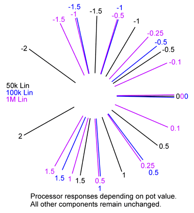

|
preliminary documentation

The matrix mixer is a multiple input, four output bipolar or unipolar DC coupled mixer, for mixing control voltages or audio signals. In cases where you require several different mixes from a common set of signals, this module is ideal. Each output can be independently switched to operate in unipolar or bipolar mode. When in unipolar mode, all pots feeding that output behave in regular fashion, that is when the knob is fully counter-clockwise, no signal from the associated input passes into the mix. As the knob is advanced clockwise, a greater portion of the signal passes into the mix. In bipolar mode, each knob has a zero position mid-way through it's travel. Turning the knob anti-clockwise will add an increasing portion of a negative (inverted) version of the signal at the corresponding input, while turning the knob clockwise will add an increasing portion of the original signal to the mix. Each column has the option for three inputs, two DC coupled, and one AC coupled for audio use. The builder chooses which inputs to use. Each column also as a master level control, ranging between zero and unity gain.
A little on how it works:
The schematic, showing one input buffer and the master summers of for the Matrix Mixer.
As is obvious from the circuit diagram, the matrix mixer is little more than a group of standard op-amp summing circuits. Each column consists of an op-amp input stage and four pots. Any signal applied to an input is first buffered by an inverting summer based around a TL071 op-amp. The gain of this stage can be controlled by the pot in its feedback path. Three inputs are provided on the PCB, two DC coupled and one AC coupled via a 220n capacitor. The buffered signal is then fed to the wipers of for pots, which direct the signal in varying proportions to the A and B buses. The pots steer the signal to either the first or second op-amp of the mixer in bipolar mode, or the first op-amp or ground in unipolar mode. Any signal that is sent to the first op-amp is inverted, then mixed with any signal being sent to the second op-amp. This signal is then inverted again, and sent to the output jack.
Construction
The component overlays. Click for enlarged versions. Before you start assembly, check the board for etching faults. Look for any shorts between tracks, or open circuits due to over etching. Take this opportunity to sand the edges of the board if needed, removing any splinters or rough edges. It is possible to build this using Cliff style jacks on the PCBs, or to use other jacks, in which case a different method of mounting the buffer board will be required. When you are happy with the printed circuit boards, construction can proceed as normal, starting with the resistors first, followed by the IC socket if used, then moving onto the taller components. Take particular care with the orientation of the polarized components such as electrolytics, diodes, transistors and ICs. When inserting ICs into sockets, take care not to accidentally bend any of the pins under the chip. Also, make sure the notch on the chip is aligned with the notch marked on the PCB overlay. On the UNI33B column PCB there is provision for an offset null trimmer. These (and their associated 1k5 resistors) can be omitted as they are only there for experimenters. If you don't know what they are for, you don't need them. Other chips can be substituted for the TL071 (single op-amp) and TL072 (dual op-amp) if desired. Column boards are connected to the main board via a 16 way ribbon cable and 16 pin insulation displacement connectors. For each additional column board used, you need only add another connector to the same ribbon cable. 90° mounting box headers would be ideal for this, although, as the photo's show, regular box headers can be used if the insulation displacement connectors are spaced further apart on the ribbon cable. The master PCB (UNI33A) has several mounting holes, allowing it to be bolted to one of the column boards at different heights, depending on your construction preferences. This also gives clearance for use of a standard power connector.
Pot and Resistor selection (RA and RB) The ratio of the value of the pot (RA) to that of the fixed resistors (RB) used in the processor will affect the response of the pot. The pot itself MUST be linear. For example, with RB = 100k, a 50k pot for RA will produce a slightly anti-log response. A 100k pot would produce a linear response. For RB = 100k:

Notes:
Parts list This is a guide only. Parts needed will vary with individual constructor's needs. If anyone is interested in buying these boards, please check the PCBs for Sale page to see if I have any in stock. Can't find the parts? See the parts FAQ to see if I've already answered the question. Also see the CGS Synth discussion group.
Despite Serge Synthesizer being printed on this panel, this particular matrix mixer is not a Serge design. It can, however, use the same panel layout.
Article, art & design copyright 2008 by Ken Stone
| |||||||||||||||||||||||||||||||||||||||||||||||||||||||||||||||||||||||||||||||||||||||||||||||